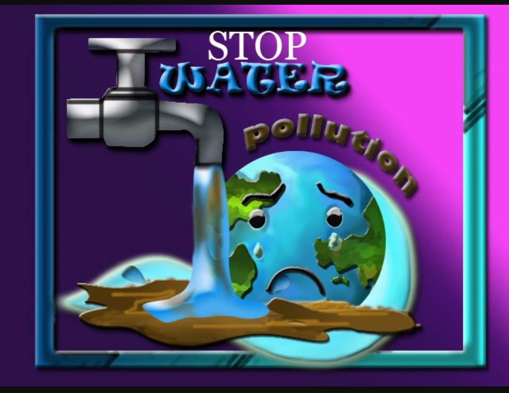
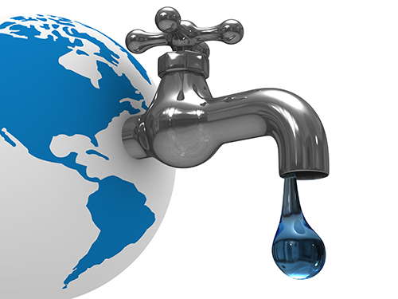
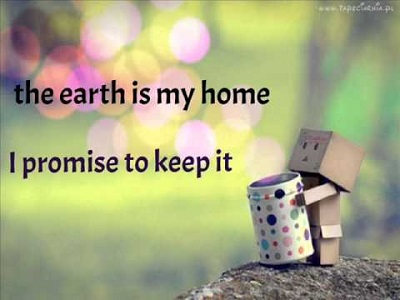

How to Solve Water Pollution
How can the growing demand for water be met?
Meeting a continous and ever increasing demand for water requires efforts to compensate for natural variability, and to improve the quality and quantity available.
- Rainwater
- Rainwater has been collected for thousands of years in many parts of the world. Thday, this technique is used in Asia to replenish underground supplies. It is relatively inexpensive and has the advantage of allowing local communities to develop and maintain the required structures themselves.
- Diverting Surface Water
- Diverting surface water into the ground can help reduce losses from evaporation, compensate for variations in flow, and improve quality. Middle East and Mediterranean regions are applying this strategy.
- Dams and reserviors
- Dams and reservoirs have built to store water for irrigation and drinking. Moreover dams can provide power and help control floods, but they can also bring about undesirable social and environment impacts.
- Transferring
- Transferring water between river basins can slso help alleviate shortage. China, for instance, already has major intergasin links, and is planning more. The impact of these projects on people and the environment must be monitored closely.
- Reused
- Wastewater is now reused for different purposes in many countries, especially in the Middle East, and this practice is expected to grow. Worldwide, non-potable water is used for irrigation and industrial cooling. Cities are also turning to water re-use to supplement drinking water supplies, taking advangage of progress in water treatment.
- Desalinated water
- Seawater and other salty water that has been turned into freshwater - is used by cities and y industriesm especially in the Middle East. The cost of this technique has dropped sharply, but it relies heavily on energy from fossil fuels and raises waste management and climate change issues.
How could water resources be developed sustainably?
Using water resources sustainably is challenging because of the many factors involved, including chages in climate, the natural variability of the resource, as well as pressures due to human activity. At present, most water policy is still driven by short-term economic and political concerns that do not take into account science and good setwardship.
State-of-the-earth solutions and more funding, along with more data on water resources, are needed especially in developing nations.
Some countries have programs to reduce demand and losses from urban water distribution systems but more efforts are necessary. However, this will involve changes in behaviour requiring education and political commitment. Such efforts to conserve water and reduce demand are not only useful in regions where water is in short supply,
they can also bring economic benefits in wetter regions. Decentralised approaches to water resources management that focus on river basins are increasingly pursued even across borders. Exchanging information between countries that river basins will yield both economic and environmental benefits.
There is no easy way to solve water pollution; if there were, it wouldn't be so much of a problem. Broadly speaking , there are three different things that can help to tackle the problem - education, laws, and economics - and they work together as a team.
Education
Making people aware of the problem is the first step to solving it. In the early 1990s, when surfers in Britain grew tired of catching illnesses from water polluted with sewage, they formed a group called Surfers Against Sewage to force governments and water companies to clean up their act. People who've grown tired of walking the world's polluted beaches often band together
to organize community beach-cleaning sessions. Anglers who no longer catch so many fish have campaigned for tougher penalties against factories that pour pollution into our rivers. Greater public awareness can make a positive difference.
Economics
Most environmental experts agree that the best way to tackle pollution is through something called the polluter pays principle. This means that whoever causes pollution should have to pay to clean it up, one way or another. Polluter pays can operate in all kinds of ways. It could mean that tanker owners should have to take out insurance that covers the cost of oil spill cleanups, for example.
It could also mean that shoppers should have to pay for their plastic grocery bags, as is now common in Ireland, to encourage recycling and inimize waste. Or it could mean that factories that use rivers must have their water inlet pipes downstream of their effluent outflow pipes, so if they cause pollution they themselves are the first people to suffer. Ultimately, the polluter pays principle
is designed to deter people from polluting by making it less expensive for them to behave in an environmentally responsible way.
Five Basic Ways To Conserve Water
Everyone wants to help to conserve valuable resources. And water is one of the most valuable there is. We couldn't live without it.
- Check every faucet in your home for leaks Just a slow drip can waste 15 to 20 gallons a day. Fix it and you save almost 6,000 gallons a year.
- Put a bit of food doloring in each toilet tank. Without flushing, watch for a few minutes to see if the color shows up in the bowl. It's not uncommon to lose up to 100 gallons a day from one of these otherwise invisible toilet leaks. And that's more than 30,000 gallons a year.
- Don't shower too long or fill thetub too full. Five minutes of showering and about five inches in tub is plenty.
- Try to use automatic dish and clithes washing machines with full loads only. Even when the machines feature short cycles, you're being more efficient with your water when there are enough dirty things for a full load.
- Most importantly, water your lawn and garden with good sense. Do it early or late, not in the midday heat. Avoid windy days. See that water goes where it shold, not on sidewalks or drive ways. Stick a spade in the groud now and then to see that water is getting down deep. A good soaking encourages good system. But remember this: A single lawn sprinkler spraying five gallons per minute use 50% more water in just one hour
than a combination of ten toilet flushes, two 5-minute showers, two dishwasher loads and a full load of clothes. So be sensible. Check with local lawn/garden experts for best results, and check local watering regulations.

Minimizing Water Pollution
In order for countries to keep water clean and uncontaminated there are a number of factors that can be implemented to insure that the water on our earth remains clean and if contaminated can be filtered so that the poisonous materials can be removed.
Companies that develop products and goods should focus on developing materials that are eco-friendly and recyclable. The more recyclable components their are in the products they sell the better it is for the environment and by allowing people to reship or resell the old materials companies can save money by reusing the parts that they obtain.
Reduce, recycle & reuse. Companies can find better ways to reduce the amount of materials they use to create their products, recycle left over materials and reuse or re-purpose materials that may not work with their existing products.

If you would like to limit the amount of pollution you produce and thus help keep the oceans, rivers and lakes clean there are a number of things you can do.
- Keep your car well maintained and immediately service it if you notice any oil leaking from the car.
- Replace your air fresheners with eco-friendly candles, incense and/or potpourri.
- Purchase environmentally friendly cleaning products that do not harm the land if they happen to be flushed or emptied into a drain.
- Reduce the amount of power you use and purchase energy saving light bulbs and appliances. This helps reduce the amount of emissions being released by utility companies and your own home products.
- Conserve your water usage and don't leave water running when you are not using it.
- Reduce, recycle and reuse materials that you have purchased. Plastics and papers may be sent to the recycling bin while some of your glass materials may be able to be reused or re-purposed.
- Make sure non recyclable waste is contained properly so that it does not spill into the land, street drain sewage drain.
- Purchase local food that has been grown from healthy arricultural farms that don't use polluting fertilizers and pesticides.
- Purchase eco-friendly lawn fertilizers and pesticides for your own lawn in order to prevent your lawn from becoming toxic and prevent possible hazardass chemicals from entering street drains.
- Recycle old clothing by giving it away to shelters and non for profits resellers. Not only does it lower the amount of garbage you produce it also allows you give to a cause and help the community.
- Use a reusable grocery bag rather than the plastic bags offered at grocery stores when shopping for food to minize your plastic waste.
- Eliminate unnecessary mail and have your bills sent to you by email. This helps protect the trees and reduce the amount of paper you have to dispose of later.
- Properly dispose of toxic chemicals rather than dropping them down the drain. You can do an online search for local toxic chemical disposal areas near you.

Our Clean Future
Life is ultimately about choices-and so is pollution. We can live with sewage-strewn beaches, dead reivers, and fish that are too poisonous to eat. Or we can work together to keep the environment clean so the plants, animals, and people who depend on it remain healthy.
We can take individual action to help reduce water pollution, for example, by using environmentally friendly detergents, not pouring oil down drains, reducing pesticides, and so on. We can take community action too, by helping out on beach cleans or litter picks to keep our rivers and seas that little bit cleaner.
And we can take acion as countries and continents to pass laws that will make pollution harder and the world less polluted. Working together, we can make pollution less of a problem - and the world a better place.